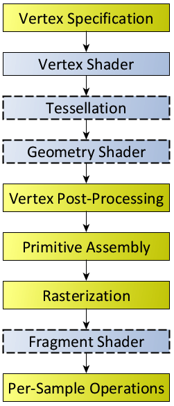
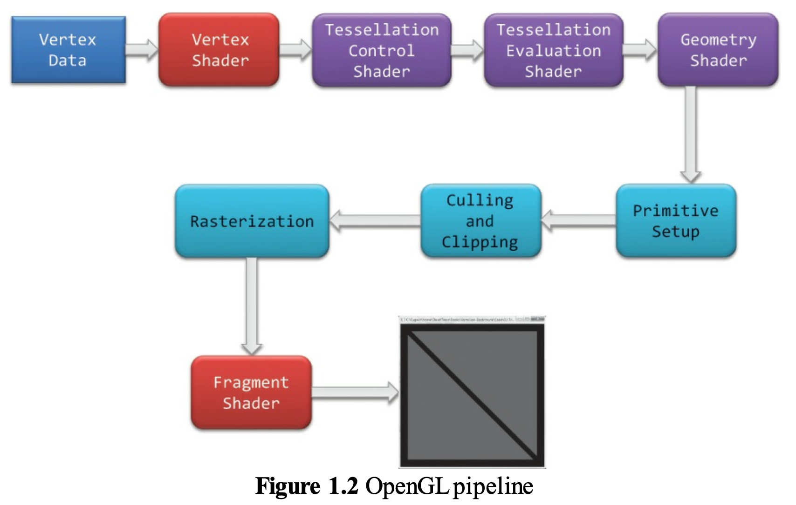
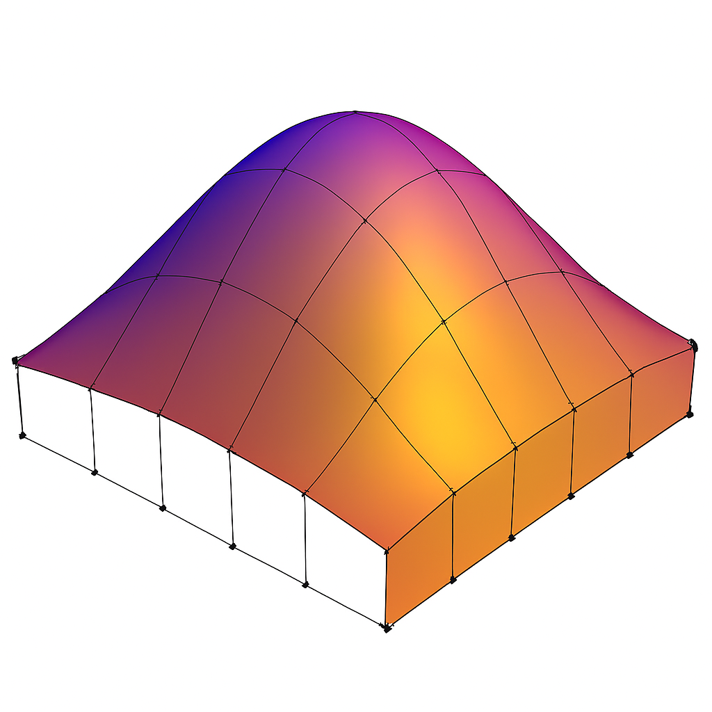
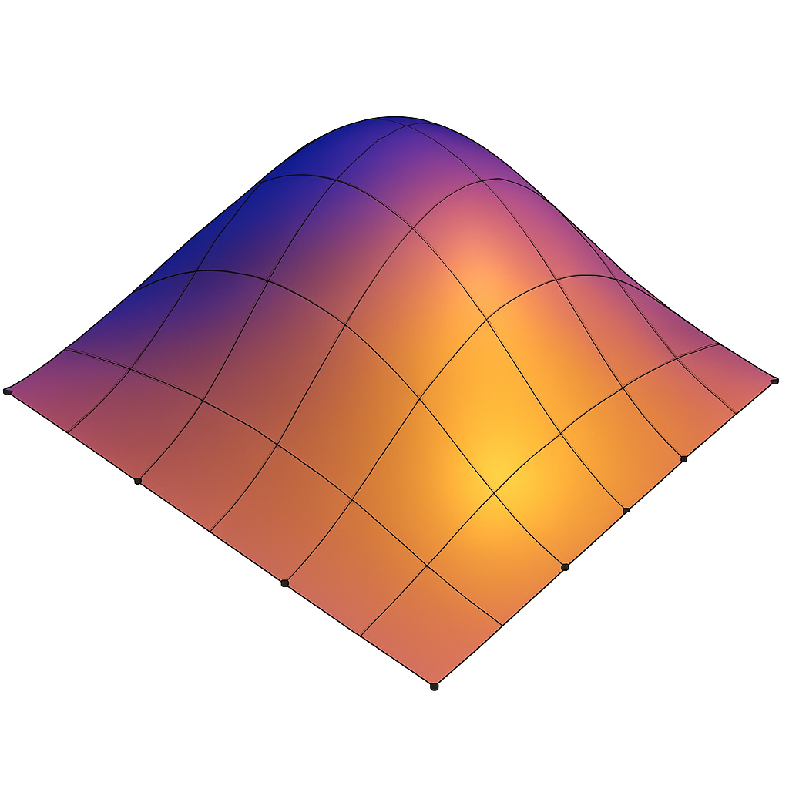
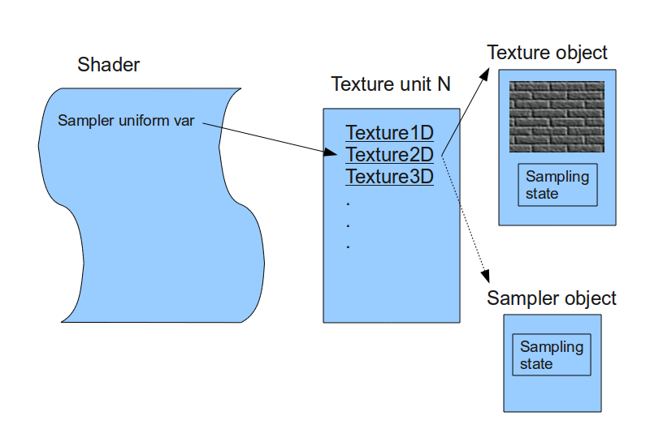
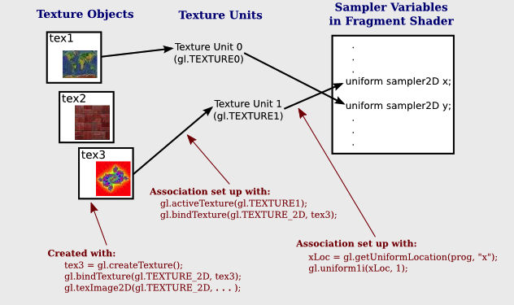

OpenGL¶
Example of OpenGL program¶
The following example is from the OpenGL Red Book and its example code [1] [2].
References/triangles.vert
#version 400 core
layout( location = 0 ) in vec4 vPosition;
void
main()
{
gl_Position = vPosition;
}
References/triangles.frag
#version 450 core
out vec4 fColor;
void main()
{
fColor = vec4(0.5, 0.4, 0.8, 1.0);
}
References/01-triangles.cpp
1//////////////////////////////////////////////////////////////////////////////
2//
3// Triangles.cpp
4//
5//////////////////////////////////////////////////////////////////////////////
6
7#include "vgl.h"
8#include "LoadShaders.h"
9
10enum VAO_IDs { Triangles, NumVAOs };
11enum Buffer_IDs { ArrayBuffer, NumBuffers };
12enum Attrib_IDs { vPosition = 0 };
13
14GLuint VAOs[NumVAOs];
15GLuint Buffers[NumBuffers];
16
17const GLuint NumVertices = 6;
18
19//----------------------------------------------------------------------------
20//
21// init
22//
23
24void
25init( void )
26{
27 glGenVertexArrays( NumVAOs, VAOs ); // Same with glCreateVertexArray( NumVAOs, VAOs );
28 // https://stackoverflow.com/questions/24441430/glgen-vs-glcreate-naming-convention
29 // Make the new VAO:VAOs[Triangles] active, creating it if necessary.
30 glBindVertexArray( VAOs[Triangles] );
31 // opengl->current_array_buffer = VAOs[Triangles]
32
33 GLfloat vertices[NumVertices][2] = {
34 { -0.90f, -0.90f }, { 0.85f, -0.90f }, { -0.90f, 0.85f }, // Triangle 1
35 { 0.90f, -0.85f }, { 0.90f, 0.90f }, { -0.85f, 0.90f } // Triangle 2
36 };
37
38 glCreateBuffers( NumBuffers, Buffers );
39
40 // Make the buffer the active array buffer.
41 glBindBuffer( GL_ARRAY_BUFFER, Buffers[ArrayBuffer] );
42 // Attach the active VBO:Buffers[ArrayBuffer] to VAOs[Triangles]
43 // as an array of vectors with 4 floats each.
44 // Kind of like:
45 // opengl->current_vertex_array->attributes[attr] = {
46 // type = GL_FLOAT,
47 // size = 4,
48 // data = opengl->current_array_buffer
49 // }
50 // Can be replaced with glVertexArrayVertexBuffer(VAOs[Triangles], Triangles,
51 // buffer[ArrayBuffer], ArrayBuffer, sizeof(vmath::vec2));, glVertexArrayAttribFormat(), ...
52 // in OpenGL 4.5.
53
54 glBufferStorage( GL_ARRAY_BUFFER, sizeof(vertices), vertices, 0);
55
56 ShaderInfo shaders[] =
57 {
58 { GL_VERTEX_SHADER, "media/shaders/triangles/triangles.vert" },
59 { GL_FRAGMENT_SHADER, "media/shaders/triangles/triangles.frag" },
60 { GL_NONE, NULL }
61 };
62
63 GLuint program = LoadShaders( shaders );
64 glUseProgram( program );
65
66 glVertexAttribPointer( vPosition, 2, GL_FLOAT,
67 GL_FALSE, 0, BUFFER_OFFSET(0) );
68 glEnableVertexAttribArray( vPosition );
69 // Above two functions specify vPosition to vertex shader at layout (location = 0)
70}
71
72//----------------------------------------------------------------------------
73//
74// display
75//
76
77void
78display( void )
79{
80 static const float black[] = { 0.0f, 0.0f, 0.0f, 0.0f };
81
82 glClearBufferfv(GL_COLOR, 0, black);
83
84 glBindVertexArray( VAOs[Triangles] );
85 glDrawArrays( GL_TRIANGLES, 0, NumVertices );
86}
87
88//----------------------------------------------------------------------------
89//
90// main
91//
92
93#ifdef _WIN32
94int CALLBACK WinMain(
95 _In_ HINSTANCE hInstance,
96 _In_ HINSTANCE hPrevInstance,
97 _In_ LPSTR lpCmdLine,
98 _In_ int nCmdShow
99)
100#else
101int
102main( int argc, char** argv )
103#endif
104{
105 glfwInit();
106
107 GLFWwindow* window = glfwCreateWindow(800, 600, "Triangles", NULL, NULL);
108
109 glfwMakeContextCurrent(window);
110 gl3wInit();
111
112 init();
113
114 while (!glfwWindowShouldClose(window))
115 {
116 display();
117 glfwSwapBuffers(window);
118 glfwPollEvents();
119 }
120
121 glfwDestroyWindow(window);
122
123 glfwTerminate();
124}
Init():
Generate Vertex Array VAOs and bind VAOs[0].
(glGenVertexArrays(NumVAOs, VAOs); glBindVertexArray(VAOs[Triangles]); glCreateBuffers(NumBuffers, Buffers);)
A vertex-array object holds various data related to a collection of vertices. Those data are stored in buffer objects and managed by the currently bound vertex-array object.
glBindBuffer(GL_ARRAY_BUFFER, Buffers[ArrayBuffer]);
Because there are many different places where buffer objects can be in OpenGL, when we bind a buffer, we need to specify what we’d like to use it for. In our example, because we’re storing vertex data into the buffer, we use GL_ARRAY_BUFFER. The place where the buffer is bound is known as the binding target.
According to the counter-clockwise rule in the previous section, triangle primitives are defined in variable vertices. After binding OpenGL VBO Buffers[0] to vertices, vertex data will be sent to the memory of the server (GPU).
Think of the “active” buffer as just a global variable, and there are a bunch of functions that use the active buffer instead of taking using a parameter. These global state variables are the ugly side of OpenGL [6] and can be replaced with glVertexArrayVertexBuffer(), glVertexArrayAttribFormat(), etc. Then call glBindVertexArray(vao) before drawing in OpenGL 4.5 [7] [8].
glVertexAttribPointer(vPosition, 2, GL_FLOAT, GL_FALSE, 0, BUFFER_OFFSET(0)):
During GPU rendering, each vertex position will be held in vPosition and passed to the “triangles.vert” shader through the LoadShaders(shaders) function.
glfwSwapBuffers(window):
You’ve already used double buffering for animation. Double buffering is done by making the main color buffer have two parts: a front buffer that’s displayed in your window; and a back buffer, which is where you render the new image. When you swap the buffers (by calling glfwSwapBuffers(), for example), the front and back buffers are exchanged [9].
display():
Bind VAOs[0], set render mode to GL_TRIANGLES and send vertex data to Buffer (gpu memory, OpenGL pipeline). Next, GPU will do rendering pipeline descibed in next section.
The triangles.vert has input vPosition and no output variable, so using gl_Position default varaible without declaration. The triangles.frag has not defined input variable and has defined output variable fColor instead of using gl_FragColor.
The “in” and “out” in shaders above are “type qualifier”. A type qualifier is used in the OpenGL Shading Language (GLSL) to modify the storage or behavior of global and locally defined variables. These qualifiers change particular aspects of the variable, such as where they get their data from and so forth [10].
Though attribute and varying are removed from later version 1.4 of OpenGL, many materials in website using them [11] [12]. It’s better to use “in” and “out” to replace them as the following code. OpenGL has a few ways to binding API’s variable with shader’s variable. glVertexAttrib* as the following code and glBindAttribLocation() [13], …
replace attribute and varying with in and out
uniform float scale;
layout (location = 0) attribute vec2 position;
// layout (location = 0) in vec2 position;
layout (location = 1) attribute vec4 color;
// layout (location = 1) in vec4 color;
varying vec4 v_color;
// out v_color
void main()
{
gl_Position = vec4(position*scale, 0.0, 1.0);
v_color = color;
}
// OpenGL API
GLfloat attrib[] = { x * 0.5f, x * 0.6f, x* 0.4f, 0.0f };
// Update the value of input attribute 1 : layout (location = 1) in vec4 color
glVertexAttrib4fv(1, attrib);
varying vec4 v_color;
// in vec4 v_color;
void main()
{
gl_FragColor = v_color;
}
An OpenGL program is made of two shaders [14] [15]:
The vertex shader is (commonly) executed once for every vertex we want to draw. It receives some attributes as input, computes the position of this vertex in space and returns it in a variable called gl_Position. It also defines some varyings.
The fragment shader is executed once for each pixel to be rendered. It receives some varyings as input, computes the color of this pixel and returns it in a variable called fColor.
Since we have 6 vertices in our buffer, this shader will be executed 6 times by the GPU (once per vertex)! We can also expect all 6 instances of the shader to be executed in parallel, since a GPU have so many cores.
3D Rendering¶
3D animation is the process of creating moving images by manipulating digital objects within a three‑dimensional space. 3D rendering is the process of converting 3D models into 2D images on a computer [16].
Based on the previous section of 3D modeling, the 3D modeling tool will generate a 3D vertex model and OpenGL code. Then, programmers may manually modify the OpenGL code and add or update shaders.
In section SW Stack and Data Flow, we mentioned the GPU will generate the rendering image for each frame according the 3D Inforamtion and Uniform Updates sent from CPU, and write each of the final frame of data in the form of color pixels to framebuffer (video memory) as Fig. 10.
Animation Parameters¶
✅ CPU only updates small animation parameters named Uniform Updates as appeared in Fig. 9; GPU computes the heavy per‑vertex work.
The 3D animation will trigger the 3D rendering process for each 2D image drawing accoriding the Uniform Updates.
The “small animation parameters” updated by the CPU are formally called:
✔ Uniform updates
✔ Constant buffer updates
✔ Per‑frame / per‑draw constants
✔ Bone matrix palette updates (for skinning)
✔ Morph weight updates (for morphing)
These are the correct technical terms used in modern graphics pipelines.
⚓ The Proper Term: “Uniform Updates”
The most accurate and universal name is:
✅ Uniform updates
or
✅ Updating uniform buffers
Because the CPU is updating uniform data that the GPU reads during shading.
Examples of uniform data:
bone matrices
morph weights
animation time
material parameters
camera matrices
light parameters
These are small, constant‑for‑the‑draw values.
⚓ More Specific Terms Used in Game Engines
Animation Parameters
Used in animation systems:
“animation parameters”
“skinning parameters”
“bone palette”
“morph weights”
Per‑Frame Constants
Used in engine architecture:
“frame constants”
“per‑frame constant buffer”
“global shader constants”
Per‑Draw Constants
Used in render pipelines:
“per‑draw uniform block”
“per‑object constant buffer”
“material constant buffer”
⚓ In Modern APIs (GL, Vulkan, DirectX)
OpenGL
Uniforms
Uniform Buffer Objects (UBOs)
Shader Storage Buffer Objects (SSBOs)
DirectX
Constant Buffers (CBuffers)
Vulkan
Descriptor sets
Uniform buffers
All refer to the same concept: small CPU‑updated data that the GPU reads during shading.
3D Rendering Pipeline¶
The steps are shown in Fig. 33.

A fragment can be treated as a pixel in 3D spaces, which is aligned with the pixel grid, with attributes such as position, color, normal and texture.
From the previous Fig. 9 and Fig. 10 in section SW Stack and Data Flow, we introduce the 3D anmiation data are classified as follows:
Vertex Data = 3D model information (the mesh (geometry), such as VBO/VAO)
Animation Parameters = per‑frame uniform updates (transforms, bone matrices, camera, materials, …)
The complete steps of 3D Rendering pipeline, excluding animation are shown in the Fig. 34 from the OpenGL website [17] and in the Fig. 35. The website also provides a description for each stage. To clarify the modern GPU pipeline, Fig. 36 shows the use of Primitive Assembly (fixed-function) and Primitive Setup (fixed-function).
 Fig. 34 Diagram of the Rendering Pipeline. The blue boxes are programmable shader stages. Shaders with dashed outlines indicate optional shader stages.¶ |
 Fig. 35 OpenGL pipeline in blue book¶ |
{kind=link}
{kind=link}
![digraph GPU_Pipeline {
rankdir=LR;
node [shape=box, style=rounded, fontsize=12];
VB [label="Vertex Buffer"];
VS [label="Vertex Shader", style=filled, fillcolor=orange];
subgraph cluster_ts {
label="Tessellation";
style=rounded;
TCS [label="Tessellation\nControl Shader\n(optional)", style=filled, fillcolor=orange];
TS [label="Tessellator\n(fixed-function)"];
TES [label="Tessellation\nEvaluation Shader\n(optional)", style=filled, fillcolor=orange];
{ rank = same; TCS; TS; TES }
}
subgraph cluster_pp {
label="Primitive Processing";
style=rounded;
PA [label="Primitive Assembly\n(topology formation)"];
GS [label="Geometry Shader\n(optional)", style=filled, fillcolor=orange];
Cull [label="Culling"];
Clip [label="Clipping"];
PS [label="Primitive Setup\n(rasterization\n prep)"];
{ rank = same; PA; GS; Cull; Clip; PS }
}
RAST [label="Rasterizer"];
FS [label="Fragment Shader", style=filled, fillcolor=orange];
FB [label="Framebuffer"];
VB -> VS;
VS -> TCS;
TCS -> TS;
TS -> TES;
// Bypass tessellation path
VS -> PA [label="(no tessellation)", style=dashed];
TES -> PA;
PA -> GS [label = "Primitives\n(triangles/lines)"];
GS -> Cull;
Cull -> Clip;
Clip -> PS;
PS -> RAST;
RAST -> FS;
FS -> FB;
{ rank = same; FS; FB }
}](_images/graphviz-0bf2423624181ecfd1a4422a4479bcc85a0dca9a.png)
Fig. 36 Modern GPU Pipeline¶
As shown in Fig. 36:
Vertex Shader and Tessellation: processing and transform for vertices data.
Primitive Processing: processing and transform for primitives data.
Rasterizer: Primitives → Fragment.
Fragment Shader: Fragment → Colored Fragment.
As illustred in Cross Product section,
✔️ Each mesh (triangle or primitive) has a fixed “outer” and “inner” side, determined by CCW ordering in object space.
✔️ By reading these CCW-ordered vertices sequentially, the shape and surface orientation of the 3D model can be constructed.
✔️ There is no need to wait for the entire mesh to be received; once three CCW-ordered vertices are available, each triangle can be processed correctly.
✔️ When the camera moves to the inside an object: CCW ↔ CW flips.
This means:
✔️ Vertex Shader and Tessellation: may processing each vertex independently as long as the vertex order is preserved.
✔️ Once three CCW-ordered vertices are available, Primitive Assembly can convert them into a triangle and pass it to the next pipeline stage.
For example: once v0,v1,v2,v3 are available, Primitive Assembly outputs:
Triangle A (v0,v1,v2)
Triangle B (v2,v3,v0)
After vertices are assembled into primitives (such as triangles), the front-facing and back-facing surfaces can be determined, and the hidden primitives can be removed.
The Red Book and Blue Book show only Vertex Specification and Vertex Data in the rendering flow because they never show Animation Parameters as part of the rendering flow. The animation flow from CPU to GPU is shown in Fig. 37, based on Fig. 33.
![digraph CPU_GPU_Pipeline {
rankdir=LR;
node [shape=box, style=rounded, fontsize=12];
subgraph cluster_cpu {
label="CPU";
style=rounded;
CPU_Vertex [label="Load 3D Model\n(Vertex Data)\nVBOs, VAOs, Indices"];
CPU_Anim [label="Update Animation Parameters\n(Bone Matrices, Morph Weights,\nTime, Material Params)"];
}
subgraph cluster_gpu {
label="GPU";
style=rounded;
VS [label="Vertex Shader\n(Skinning, Morphing,\nModel/View/Proj Transform)"];
Raster [label="Rasterizer\n(Primitive Assembly,\nClipping, Interpolation)"];
FS [label="Fragment Shader\n(Lighting, Texturing,\nShading, Materials)"];
FB [label="Final Rendered Image\n(Framebuffer Output)"];
}
CPU_Vertex -> VS;
CPU_Anim -> VS;
VS -> Raster;
Raster -> FS;
FS -> FB;
}](_images/graphviz-78b8444233f6768a7fb19362c300b29ad5f807e7.png)
Fig. 37 CPU and GPU Pipeline For Shaders¶
Each draw call may correspond to:
one mesh
one submesh
one meshlet (in mesh‑shader pipelines)
or many meshes batched together
Although the Rendering Pipeline shown in Fig. 34 and Fig. 35 do not explicitly include per-frame animation flow— because the inputs are labeled Vertex Specification and Vertex Data and they do not show Animation Parameters as part of the rendering process—the pipeline is still applicable.
However the following table from OpenGL rendering pipeline Figure 1.2 and its stages from the book OpenGL Programming Guide, 9th Edition [1] is broad enough to cover animation.
Stage. |
Description |
|---|---|
Vertex Shading |
Vertex → Vertex and other data such as color for later passes. For each vertex issued by a drawing command, a vertex shader processes the data associated with that vertex. Vertex Shader: provides the Vertex → Vertex transformation effects controlled by the users. |
Tessellation Shading |
Create more detail on demand when zoomed in. After the vertex shader processes each vertex, the tessellation shader stage (if active) continues processing. The tessellation stage is actually divided into two shaders known as the tessellation control shader and the tessellation evaluation shader. A single patch from Tesslation Control Shader (TCS) and Tesslation Evaluation Shader (TVS) can generate millions of micro‑triangles. See reference below. |
Primitive Assembly |
This is a fixed‑function hardware stage: forms triangles/lines/points. |
Geometry Shader |
Primitive Transformation: output zero primitives (cull), output one primitive (pass‑through), output many primitives (amplify) and output different topology (e.g., point → quad) Allows additional processing of geometric primitives. This stage may create new primitives before rasterization. The Geometry shading stage is another optional stage that can modify entire geometric primitives within the OpenGL pipeline. This stage operates on individual geometric primitives allowing each to be modified. In this stage, you might generate more geometry from the input primitive, change the type of geometric primitive (e.g., converting triangles to lines), or discard the geometry altogether. |
Culling |
Remove entire primitives that are hidden or outside the viewport. |
Clipping |
Clip the hidden portions of the primitive, separating it into visible and hidden parts and discarding the hidden portions. |
Primitive Setup (rasterization preparation) |
This stage: takes the final primitive (after GS), computes edge equations, computes barycentric interpolation coefficients, determine rasterization rules and prepare for triangle traversal. |
Rasterization |
Geometric Primitives → Fragment. The job of the rasterizer is to determine which screen locations are covered by a particular piece of geometry (point, line, or triangle). Knowing those locations, along with the input vertex data, the rasterizer linearly interpolates the data values for each varying variable in the fragment shader and sends those values as inputs into your fragment shader. A fragment can be treated as a pixel in 3D spaces, which is aligned with the pixel grid, with attributes such as position, color, normal and texture. Early Depth and Stencil Tests (Early‑Z): reject hidden fragments before shading. |
Fragment Shading |
Fragment → Colored Fragment. Determine color for each pixel. In this stage, a fragment’s color and depth values are computed and then sent for further processing in the fragment-testing and blending parts of the pipeline. The final stage where you have programmable control over the color of a screen location is fragment shading. In this shader stage, you use a shader to determine the fragment’s final color (although the next stage, per-fragment operations, can modify the color one last time) and potentially its depth value. Fragment shaders are very powerful, as they often employ texture mapping to augment the colors provided by the vertex processing stages. A fragment shader may also terminate processing a fragment if it determines the fragment shouldn’t be drawn; this process is called fragment discard. A helpful way of thinking about the difference between shaders that deal with vertices and fragment shaders is this: vertex shading (including tessellation and geometry shading) determines where on the screen a primitive is, while fragment shading uses that information to determine what color that fragment will be. |
Stage. |
Description |
|---|---|
Per-Fragment Operations |
During this stage, a fragment’s visibility is determined using depth testing (also commonly known as z-buffering) and stencil testing. If a fragment successfully makes it through all of the enabled tests, it may be written directly to the framebuffer, updating the color (and possibly depth value) of its pixel, or if blending is enabled, the fragment’s color will be combined with the pixel’s current color to generate a new color that is written into the framebuffer. |
Compute shading stage |
Compute shader: may be applied in any stage. This is not part of the graphical pipeline like the stages above, but stands on its own as the only stage in a program. A compute shader processes generic work items, driven by an application-chosen range, rather than by graphical inputs like vertices and fragments. Compute shaders can process buffers created and consumed by other shader programs in your application. This includes framebuffer post-processing effects or really anything you want. Compute shaders are described in Chapter 12 of Red Book, “Compute Shaders” [18]. |
Tessllation
Tessellation Shading: The core problem that Tessellation deals with is the static nature of 3D models in terms of their detail and polygon count. The thing is that when we look at a complex model such as a human face up close we prefer to use a highly detailed model that will bring out the tiny details (e.g. skin bumps, etc). A highly detailed model automatically translates to more triangles and more compute power required for processing. … One possible way to solve this problem using the existing features of OpenGL is to generate the same model at multiple levels of detail (LOD). For example, highly detailed, average and low. We can then select the version to use based on the distance from the camera. This, however, will require more artist resources and often will not be flexible enough. … Let’s take a look at how Tessellation has been implemented in the graphics pipeline. The core components that are responsible for Tessellation are two new shader stages and in between them a fixed function stage that can be configured to some degree but does not run a shader. The first shader stage is called Tessellation Control Shader (TCS), the fixed function stage is called the Primitive Generator (PG), and the second shader stage is called Tessellation Evaluation Shader (TES). Some GPU havn’t this fixed function stage implemented in HW and even havn’t provide these TCS, TES and Gemoetry Shader. User can write Compute Shaders instead for this on-fly detail display. This surface is usually defined by some polynomial formula and the idea is that moving a CP has an effect on the entire surface. … The group of CPs is usually called a Patch [19]. The data flow in Tessllation Stage between TCS, Fixed-Function Tessellator and TES is illustrated in Fig. 38. Chapter 9 of Red Book [1] has details. The next section Tessellation Example describes the details for the Tessallation with an example.
Tessellation cannot decrease the resolution of vertices from the VS. The Geometry Shader can reduce geometry (by discarding primitives), but it cannot reduce the number of input vertices coming from VS/TES. The rasterizer can reduce fragments, but it cannot reduce vertices.
Data Flow
Sumarize the OpenGL Rendering Pipeline as shown in the Fig. 38 and Fig. 39.
![digraph OpenGL_Pipeline_Part1 {
rankdir=LR;
node [shape=box, style=rounded, fontsize=12];
App [label="Application"];
VS [label="Vertex Shader"];
subgraph cluster_optional {
label="Optional Stages";
style="rounded,dashed";
color="gray";
subgraph cluster_ts {
label="Tessellation";
style=rounded;
TCS [label="Tessellation Control Shader\n(TCS)"];
TS [label="Fixed-Function Tessellator"];
TES [label="Tessellation Evaluation Shader\n(TES)"];
TCS -> TS [label="CP + Tessellation level"];
TS -> TES [label="Tessellated domain\ncoordinates"];
{ rank = same; TCS; TS; TES }
}
GS [label="Geometry Shader"];
}
PA [label="Primitive Assembly"];
PS [label="Primitive Setup"];
App -> VS [label="Vertex Arrays"];
VS -> TCS [label="Transformed Vertices +\nControl Points(CP)"];
TES -> PA [label="Tessellated Vertices\n(more vertices)"];
PA -> GS;
GS -> PS [label="Modified Primitives"];
//{ rank = same; TCS; TES }
}](_images/graphviz-ba04c637ee1adaf20982232a206c5d60a453c5c6.png)
Fig. 38 The part 1 of GPU Rendering Pipeline Stages¶
![digraph OpenGL_Pipeline_Part2 {
rankdir=LR;
node [shape=box, style=rounded, fontsize=12];
PS [label="Primitive Setup"];
Raster [label="Rasterization"];
FS [label="Fragment Shader"];
PF [label="Per-Fragment Ops"];
FB [label="Framebuffer"];
PS -> Raster [label="Assembled Primitives"];
Raster -> FS [label="Fragments"];
FS -> PF [label="Colored Fragments"];
PF -> FB [label="Final Fragments"];
}](_images/graphviz-3c813ddb9e432947f1991ce338444f3762e3efcc.png)
Fig. 39 The part 2 of GPU Rendering Pipeline Stages¶
The data flow through the OpenGL Shader and the details flow in TCS, Fixed-Function Tessellator and TES are described in below.
Shader Stage |
Input Data (from CPU or previous stage) |
Output Data (to next stage) |
How GPU Hardware Uses These Data (with Stage Name) |
|---|---|---|---|
Vertex Shader |
|
|
|
Tessellation Control Shader (TCS) |
|
|
|
Fixed‑Function Tessellator (TS) |
|
|
|
Tessellation Evaluation Shader (TES) |
|
|
|
Geometry Shader |
|
|
|
Shader Stage |
Input Data (from CPU or previous stage) |
Output Data (to next stage) |
How GPU Hardware Uses These Data (with Stage Name) |
|---|---|---|---|
Rasterizer (Fixed Function) |
|
|
|
Fragment Shader |
|
|
|
Output Merger / ROP (Fixed Function) |
|
|
|
Varying
A varying is a piece of data that:
Comes out of the vertex shader
Gets interpolated by the rasterizer
Arrives as input to the fragment shader
It is called varying because its value varies across the surface of a triangle.
Varying Name |
Meaning |
Why It Varies Across the Primitive |
|---|---|---|
vNormal |
Surface normal at each vertex |
Lighting requires a smoothly changing normal across the triangle so per-pixel shading can compute correct diffuse and specular terms |
vUV |
Texture coordinates |
Each pixel needs its own UV to sample the correct texel from the texture |
vColor |
Vertex color (per-vertex material tint) |
Enables smooth color gradients or per-vertex painting effects |
vWorldPos |
World-space position of the vertex |
Used for per-pixel lighting, reflections, shadows, and screen-space effects; must be interpolated so each fragment knows its own world position |
For 2D animation, the model is created by 2D only (1 face only), so it only can be viewed from the same face of model. If you want to display different faces of model, multiple 2D models need to be created and switch these 2D models from face(flame) to face(flame) from time to time [20].
Tessellation Example¶
In Chapter 9 (Tessellation), the Red Book [1] focuses on:
gl_TessLevelOuter[]
gl_TessLevelInner[]
It never mentioned to gnerate modified CPs in TCS. The following example give the output for (TCS → TS → TES) in patching a single rectangle.
An example for Inflated 4×4 Bézier Patch (TCS → TS → TES)
The following diagram illustrates the complete OpenGL tessellation pipeline for a 4×4 bicubic Bézier patch on 1 single rectangle. Only the four interior control points (5, 6, 9, 10) are lifted off the plane, producing a smooth inflated surface.
Tessellation Control Shader (TCS): output:
modified Control Points (CPs, Patch): gl_out
Tessellation level: gl_TessLevelInner, gl_TessLevelOuter
Another name for CPs is Patch.
The TCS outputs 16 CPs arranged in a 4×4 grid. Only CPs 5, 6, 9, and 10 are elevated to create curvature.
#version 450 core
layout(vertices = 16) out;
void main()
{
// Copy all CPs
gl_out[gl_InvocationID].gl_Position =
gl_in[gl_InvocationID].gl_Position;
// Inflate interior CPs
if (gl_InvocationID == 5 ||
gl_InvocationID == 6 ||
gl_InvocationID == 9 ||
gl_InvocationID == 10)
{
gl_out[gl_InvocationID].gl_Position +=
vec4(0.0, 0.0, 1.0, 0.0);
}
// Tessellation levels
if (gl_InvocationID == 0) {
gl_TessLevelOuter[0] = 4.0;
gl_TessLevelOuter[1] = 4.0;
gl_TessLevelOuter[2] = 4.0;
gl_TessLevelOuter[3] = 4.0;
gl_TessLevelInner[0] = 4.0;
gl_TessLevelInner[1] = 4.0;
}
}
Fixed-Function Tessellator (TS), also name as Primitive Generator (PG): output:
Tessellated coordinates (u,v,w): gl_TessCoord
The PG takes the TLs and based on their values generates a set of points inside the triangle. Each point is defined by its own barycentric coordinate. The set of points named Tessellated coordinates.
The grid size depends on tessellation levels:
If gl_TessLevelOuter[0..3] = 4.0 and gl_TessLevelInner[0..1] = 4.0 → you get a 5×5 grid, Tessellated coordinates (u,v,w)
If you set 8.0 → you get a 9×9 grid
If you set 2.0 → you get a 3×3 grid
The fixed‑function tessellator generates a 5×5 evaluation grid for tessellation level 4.0. No shading language code is written for this stage.
Tessellation Evaluation Shader (TES): output:
Tessellated Vertices: gl_Position
For each (u, v), the TES computes the surface point P(u, v) as:
where the Bernstein basis functions are:
The TES evaluates the Bézier surface at each tessellated (u, v) coordinate using the 16 CPs.
#version 450 core
layout(quads, equal_spacing, cw) in;
float B(int i, float t) {
if (i == 0) return (1 - t) * (1 - t) * (1 - t);
if (i == 1) return 3 * t * (1 - t) * (1 - t);
if (i == 2) return 3 * t * t * (1 - t);
return t * t * t;
}
void main()
{
float u = gl_TessCoord.x;
float v = gl_TessCoord.y;
vec4 p = vec4(0.0);
int idx = 0;
for (int i = 0; i < 4; ++i) {
float bu = B(i, u);
for (int j = 0; j < 4; ++j) {
float bv = B(j, v);
p += gl_in[idx].gl_Position * (bu * bv);
idx++;
}
}
gl_Position = p;
}
Result
The output for (TCS → TS → TES) in patching a single rectangle as the following table.
Inflated Bézier Patch: Control Points and Evaluated Surface (vec4)
All control points use homogeneous coordinates (x, y, z, w = 1.0). Evaluated surface points P(u,v) are also vec4.
CP Index |
Grid Position (i, j) |
Control Point (x, y, z, w) |
Evaluated P(u,v) = vec4 |
|---|---|---|---|
0 |
(0, 0) |
(0, 0, 0, 1) |
(0.0, 0.0, 0.0, 1) |
1 |
(1, 0) |
(1, 0, 0, 1) |
(1.0, 0.0, 0.0, 1) |
2 |
(2, 0) |
(2, 0, 0, 1) |
(2.0, 0.0, 0.0, 1) |
3 |
(3, 0) |
(3, 0, 0, 1) |
(3.0, 0.0, 0.0, 1) |
4 |
(0, 1) |
(0, 1, 0, 1) |
(0.0, 1.0, 0.0, 1) |
5 |
(1, 1) |
(1, 1, 1, 1) |
(1.0, 1.0, 0.5625, 1) |
6 |
(2, 1) |
(2, 1, 1, 1) |
(2.0, 1.0, 0.5625, 1) |
7 |
(3, 1) |
(3, 1, 0, 1) |
(3.0, 1.0, 0.0, 1) |
8 |
(0, 2) |
(0, 2, 0, 1) |
(0.0, 2.0, 0.0, 1) |
9 |
(1, 2) |
(1, 2, 1, 1) |
(1.0, 2.0, 0.5625, 1) |
10 |
(2, 2) |
(2, 2, 1, 1) |
(2.0, 2.0, 0.5625, 1) |
11 |
(3, 2) |
(3, 2, 0, 1) |
(3.0, 2.0, 0.0, 1) |
12 |
(0, 3) |
(0, 3, 0, 1) |
(0.0, 3.0, 0.0, 1) |
13 |
(1, 3) |
(1, 3, 0, 1) |
(1.0, 3.0, 0.0, 1) |
14 |
(2, 3) |
(2, 3, 0, 1) |
(2.0, 3.0, 0.0, 1) |
15 |
(3, 3) |
(3, 3, 0, 1) |
(3.0, 3.0, 0.0, 1) |
 Fig. 40 The final rendering result for 5×5 tessellated mesh.¶ |
 Fig. 41 Geometry Shader (GS) can expand a 5×5 tessellated grid into a 6×6 mesh¶ |
{kind=link}
{kind=link}
The following TCS glsl from the Red Book can patch high or low resolution of CPs at runtime according the distance of the squre vertices.
Specifying Tessellation Level Factors Using Perimeter Edge Centers.
#version 450 core
// Each patch has four precomputed edge centers:
// edgeCenter[0] = left edge center
// edgeCenter[1] = bottom edge center
// edgeCenter[2] = right edge center
// edgeCenter[3] = top edge center
struct EdgeCenters {
vec4 edgeCenter[4];
};
// Array of edge-center data, one entry per patch
uniform EdgeCenters patch[];
// Camera position in world space
uniform vec3 EyePosition;
layout(vertices = 16) out;
void main()
{
// Pass through control points unchanged
gl_out[gl_InvocationID].gl_Position =
gl_in[gl_InvocationID].gl_Position;
// Synchronize all invocations
barrier();
// Only invocation 0 computes tessellation levels
if (gl_InvocationID == 0)
{
// Loop over the four perimeter edges
for (int i = 0; i < 4; ++i)
{
// Distance from eye to this edge center
float d = distance(
patch[gl_PrimitiveID].edgeCenter[i],
vec4(EyePosition, 1.0)
);
// Scale factor controlling how quickly tessellation increases
const float lodScale = 2.5;
// Convert distance to tessellation level
float tessLOD = mix(
0.0,
gl_MaxTessGenLevel,
d * lodScale
);
gl_TessLevelOuter[i] = tessLOD;
}
#if 1
// Compute the inner tessellation as the average of opposing outer
// edges: differently from Red Book.
// It’s what most engines (Unreal, Unity HDRP, Vulkan samples) do.
// Inner tessellation is the average of outer levels
float inner = 0.5 *
(gl_TessLevelOuter[0] + gl_TessLevelOuter[2]);
inner = clamp(inner, 0.0, gl_MaxTessGenLevel);
gl_TessLevelInner[0] = inner;
gl_TessLevelInner[1] = inner;
#else
// The Red Book computes outer tessellation levels first, then
// derives the inner levels from the last computed tessLOD.
tessLOD = clamp(0.5 * tessLOD, 0.0, gl_MaxTessGenLevel);
gl_TessLevelInner[0] = tessLOD;
gl_TessLevelInner[1] = tessLOD;
#endif
}
}
The texture function with the argument DisplacementMap in the Red Book, as shown in the following code, does not return color data as in the Fragment Shader. It returns the vertex position data for displacement, such as a roughness map or anything related to surface appearance.
p += texture(DisplacementMap, gl_TessCoord.xy);
Mobile GPU 3D Rendering¶
The traditional desktop GPUs is IMR — Immediate‑Mode Rendering: Cache misses dominate bandwidth.
TBDR — Tile‑Based Deferred Rendering: Cache misses are nearly eliminated.
Note
Idea:
1. TBDR divides the whole frame into small tiles that fit entirely into on‑chip SRAM.
2. Remove stages of Tessellation Control Shader (TCS), Tessellation Evaluation Shader (TES) and Geometry Shader (GS) since they are optional stages are shown in Fig. 35. Instead, developers use compute shaders before the graphics pipeline to generate meshlets, perform LOD selection, or add extra geometric detail for close‑up room-in effects is shown as Fig. 44.
★ TBDR reduces cache‑miss rate by roughly 10×–50× compared to IMR, because all intermediate color/depth/stencil traffic stays in on‑chip tile memory instead of going to L2/DRAM.
★ Desktop GPUs adopt IMR partly because GS/Tess/Mesh Shaders cannot run efficiently on TBDR. In addition, desktop GPUs adopt IMR because they have the power, bandwidth, and architectural freedom to support unpredictable geometry pipelines and massive workloads that would break TBDR’s tile‑based constraints.
TBDR — Tile‑Based Deferred Rendering¶
⚠️ For low power mobile device, mobile GPUs use tile-based rendering to reduce the traffice to DRAM as described below:
The traditional desktop GPUs is IMR — Immediate‑Mode Rendering:
IMR: “Draw call arrives → render immediately”
CPU issues DrawCall #1
→ GPU transforms vertices
→ GPU rasterizes fragments
→ GPU writes to DRAM
It never waits to see the rest of the frame.
2. TBDR: “Draw call arrives → store geometry, don’t render yet”. TBDR processes it into two phases as follows:
Phase 1 — Binning (Full‑Frame Geometry Processing) is shown as Fig. 42.
![digraph TBDR_Binning_Flow {
rankdir=LR;
node [shape=box, style=rounded];
CPU_DrawCall [label="CPU Issues Draw Call"];
VS [label="Vertex Shader\n(Transform Vertices)"];
TriangleSetup [label="Triangle Setup\n(Bounding Box, Coverage)"];
Binner [label="Tile Binner\n(Determine Which Tiles Each Triangle Touches)"];
TileLists [label="Per-Tile Triangle Lists\n(Store Geometry, No Rendering Yet)"];
CPU_DrawCall -> VS -> TriangleSetup -> Binner -> TileLists;
}](_images/graphviz-5291ce49f44e160e6def66db390fea63123c8cc9.png)
Fig. 42 TBDR Pipeline¶
When a draw call arrives on a TBDR GPU:
→ It runs the vertex shader
→ It transforms all triangles
→ It determines which tiles each triangle touches
→ It stores triangle references in per‑tile lists is shown as follows:
Example of per‑tile lists
Tile 0 → triangles: [T1, T7, T8, T20]
Tile 1 → triangles: [T2, T3, T7]
Tile 2 → triangles: [T4, T5, T6, T9, T10]
...
Phase 2 — Tile Rendering (Deferred Shading)
For each tile:
→ Load tile’s triangle list
→ Rasterize only those triangles
→ Shade only visible fragments
→ Keep all intermediate buffers in on‑chip SRAM
→ Write final tile to DRAM once
★ As you can see, tile is a small part of rendering frame. In Phase 2 — Tile Rendering, GPU rendering each tile and keep the rendering result of each tile in SRAM.
TBDR Rendering¶
✅ Rendering flow:
Vertax Shader → Primitive Setup → Tile-Based Culling and Clipping → Rasterization → Fragment Shader
TBDR architectures depend on:
predictable geometry counts,
small on-chip tile memory,
minimal external memory traffic.
⚠️ As described in section 3D Rendering Pipeline, Geometry Shader (GS) can generate both more vertices and more primitives than it receives. A single patch from Tesslation Control Shader (TCS) and Tesslation Evaluation Shader (TVS) can generate millions of micro‑triangles. GS and Tessellation introduce unbounded geometry amplification, which breaks these assumptions and forces expensive DRAM spills for TBDR as shown in Fig. 43,
![digraph TBDR_GS_Comparison {
rankdir=LR;
node [shape=box, style=rounded, fontsize=11];
// Clean TBDR pipeline
subgraph cluster_clean {
label="A. Clean TBDR Pipeline (Mobile GPUs: Mali / PowerVR / Apple)";
style=rounded;
C_VS [label="Vertex Shader\n• Transform\n• Skinning\n• Varyings"];
C_PA [label="Primitive Assembly\n• Triangle setup\n• Culling\n• Clipping"];
C_Tile [label="Tiling / Binning\n• Bin triangles\n• Build tile lists\n• Predictable geometry"];
C_Rast [label="Rasterization\n• Triangle traversal\n• Pixel coverage\n• Early-Z"];
C_FS [label="Fragment Shader\n• Shading\n• Texturing\n• Lighting"];
C_WB [label="Tile Writeback\n• Store tile once\n• Low bandwidth"];
C_VS -> C_PA -> C_Tile -> C_Rast -> C_FS -> C_WB;
}
// GS/Tessellation amplified pipeline
subgraph cluster_gs {
label="B. TBDR with GS/Tessellation (Hypothetical — Why It Breaks)";
style=rounded;
G_VS [label="Vertex Shader"];
G_Tess [label="Tessellation / Geometry Shader\n• 1→64→256 triangles\n• Unbounded amplification\n• View-dependent"];
G_PA [label="Primitive Assembly\n(post-amplification)"];
G_Tile [label="Tiling / Binning\n• Tile list overflow\n• Unpredictable size\n• May spill to DRAM"];
G_Rast [label="Rasterization\n• Heavy load due to amplified geometry"];
G_FS [label="Fragment Shader"];
G_WB [label="Tile Writeback\n• Multiple passes\n• High bandwidth"];
G_VS -> G_Tess -> G_PA -> G_Tile -> G_Rast -> G_FS -> G_WB;
}
// Annotation arrows
G_Tess -> G_Tile [label="massive geometry\namplification", color="red"];
G_Tile -> G_WB [label="DRAM spills\n(high power)", color="red"];
}](_images/graphviz-70955bb21f759683ee89690930fa5b839289b5a6.png)
Fig. 43 CPU and GPU Pipeline For Shaders in Mobile Device¶
This is why Mali, PowerVR, Apple, and Adreno mobile GPUs all omit these stages [21] [22].
Developers manually invoke compute shaders to generate meshlets or additional geometry, adding extra geometric detail for close-up zoom-in effects. Both Mali and PowerVR GPUs then run the standard vertex shader on the generated results.
✔ Step 1 — Developer dispatches a compute shader
This compute shader can do things like:
break a big mesh into meshlets as Fig. 44. The mesh and meshlets are described in the Mesh-Shader Pipeline next section.
generate more vertices for detail (subdivision, displacement)
perform LOD selection
cull invisible meshlets
generate new index/vertex buffers
This is developer‑controlled, not automatic.
![digraph Meshlet_Convert_To_Render_Mobile {
rankdir=LR;
node [shape=box, style=rounded, fontsize=12];
subgraph cluster_input {
label="Input Mesh Data";
style=rounded;
BigMesh [label="Big Mesh\n(Vertex + Index Buffers)"];
}
subgraph cluster_runtime {
label="Runtime / GPU Conversion";
style=rounded;
CS_Convert [label="Compute Shader\n(Convert Mesh → Meshlets,\nCluster Vertices & Triangles,\nCulling, LOD,\nBuild Meshlet Tables)",
style=filled, fillcolor=orange];
Meshlets [label="Generated Meshlets\n(Runtime GPU Data)"];
}
subgraph cluster_render {
label="Mobile Meshlet Rendering Flow\n(Compute + VS Pipeline)";
style=rounded;
VS [label="Mobile Rendering Pipeline\n(VS Pipeline"];
}
BigMesh -> CS_Convert;
CS_Convert -> Meshlets;
Meshlets -> VS;
}](_images/graphviz-749407db8010fc515a20c400c5d634f6760629a1.png)
Fig. 44 CPU and GPU Pipeline For Shader`s in Mobile Device¶
The compute shader writes results into:
SSBOs
vertex buffers
index buffers
These buffers now contain the final geometry you want to render.
✔ Step 2 — Developer issues a normal draw call
The Mali and PowerVR’s rendering flow is illustrated as Fig. 45.
![digraph Mobile_GPU_Comparison {
rankdir=TB;
node [shape=box, style=rounded, fontsize=11];
// ARM Mali cluster
subgraph cluster_mali {
label="ARM Mali TBDR Pipeline";
style=rounded;
Mali_VS [label="Vertex Shader (VS)\n• Vertex fetch\n• Skinning / morphing\n• Model→World→Clip transforms\n• Varying generation", style="filled,rounded,bold", fillcolor="orange"];
Mali_PA [label="Primitive Assembly\n• Triangle assembly\n• Back-face culling\n• Clipping\n• Viewport transform", style="filled,rounded,bold", fillcolor="lightyellow"];
Mali_Tiling [label="Tiling / Binning\n• Bin triangles into tiles\n• Per-tile visibility\n• Tile list construction"];
Mali_Raster [label="Rasterization\n• Triangle traversal\n• Pixel coverage\n• Early-Z"];
Mali_FS [label="Fragment Shader (FS)\n• Shading\n• Texturing\n• Lighting\n• Blending", style="filled,rounded,bold", fillcolor="orange"];
Mali_Writeback [label="Tile Writeback\n• Store tile to framebuffer\n• Resolve MSAA"];
Mali_VS -> Mali_PA -> Mali_Tiling -> Mali_Raster -> Mali_FS -> Mali_Writeback;
}
// PowerVR cluster
subgraph cluster_powervr {
label="Imagination PowerVR TBDR Pipeline";
style=rounded;
PV_VS [label="Vertex Shader (VS)\n• Vertex fetch\n• Skinning / morphing\n• Transform to clip space\n• Varying generation", style="filled,rounded,bold", fillcolor="orange"];
PV_PB [label="Parameter Buffer (PB)\n• Store transformed vertices\n• Geometry parameter encoding\n• Prepare for tiling", style="filled,rounded,bold", fillcolor="lightyellow"];
PV_Tiling [label="Tiling / Binning\n• Tile list creation\n• Hidden surface removal (HSR)\n• Per-tile visibility"];
PV_Raster [label="Rasterization\n• Triangle traversal\n• Pixel coverage\n• Early-Z"];
PV_FS [label="Fragment Shader (FS)\n• Shading\n• Texturing\n• Lighting\n• Blending", style="filled,rounded,bold", fillcolor="orange"];
PV_Writeback [label="Tile Writeback\n• Store tile to framebuffer\n• Composition"];
PV_VS -> PV_PB -> PV_Tiling -> PV_Raster -> PV_FS -> PV_Writeback;
}
// Compute shader (shared concept)
Compute [shape=box, style="rounded,dashed",
label="Compute Shader (Optional)\n• Culling\n• Skinning\n• Particle simulation\n• Buffer generation\n• Preprocessing"];
CPU [shape=box, style=rounded, label="CPU\n• glDispatchCompute\n• glDraw*"];
// Shared compute flow
CPU -> Compute [label="optional"];
Compute -> Mali_VS [label=<<b><font color="blue">Small Meshlets<br/>in SSBO/buffers</font></b>>];
Compute -> PV_VS [label=<<b><font color="blue">Small Meshlets<br/>in SSBO/buffers</font></b>>];
CPU -> Mali_VS [label="draw call"];
CPU -> PV_VS [label="draw call"];
}](_images/graphviz-097ea5cb41cca1f7737d4370737fe770caf3d3d3.png)
Fig. 45 CPU and GPU Pipeline For Shaders in Mobile Device¶
Modern mobile engines instead use compute shaders for culling, LOD, meshlet prep, and procedural geometry.
✅ Geometry Shaders are notoriously inefficient even on desktop GPUs. GPU vendors (NVIDIA + AMD + Intel) designed the mesh‑shader pipeline described in the section Mesh-Shader Pipeline.
Mesh-Shader Pipeline¶
A single 3D object can contain 1 mesh, multiple meshes or hundreds of meshes (complex characters, vehicles, weapons).
Reasons
The purpose of converting a mesh into small clusters (meshlets) is to give the GPU small, coherent, cullable, cache‑friendly work units that dramatically improve parallelism, memory locality, and LOD efficiency.
Raw meshes can have anywhere from thousands to millions of vertices/triangles, while meshlets intentionally restrict clusters to ~32–128 vertices and ~32–256 triangles to maximize GPU efficiency.
Motivation
NVIDIA, AMD, and Intel all needed:
a compute‑like geometry pipeline
meshlet‑based processing
better culling
GPU‑driven rendering
a replacement for VS → TCS → TES → GS
TCS → Fixed-Function Tessellator → TES: geometry amplification.
Fixed‑Function Tessellator: subdivides the patch, generates new domain coordinates and creates the tessellated grid.
Mesh-Shader replaces the fixed‑function tessellator with compute‑like geometry pipeline.
So the vendors co‑designed the hardware pipeline.
✔ Microsoft and Khronos (Vulkan) each standardized it in their own APIs
✅ Solution: As shown in Fig. 46.
![digraph Meshlet_Offline_To_Render {
rankdir=LR;
node [shape=box, style=rounded, fontsize=12];
subgraph cluster_offline {
label="Offline / Build Time";
style=rounded;
BigMesh [label="Big Mesh\n(High-Poly Model)"];
MeshletGen [label="CPU Meshlet Generator Tool\n(Cluster Vertices & Triangles,\nBuild Meshlets, Culling Data)",
style=filled, fillcolor=orange];
Meshlets [label="Small Clusters\n(Meshlets)\n(Precomputed)"];
}
subgraph cluster_runtime {
label="Runtime / Load Time";
style=rounded;
Loader [label="Meshlets Loader\n(Load Meshlet Buffers,\nBuild GPU-Ready Data)"];
}
subgraph cluster_render {
label="Mesh Rendering Flow";
style=rounded;
RenderFlow [label="Mesh Rendering Pipeline\n(Task/Mesh Shader or\nCompute + VS Pipeline)"];
}
BigMesh -> MeshletGen;
MeshletGen -> Meshlets;
Meshlets -> Loader;
Loader -> RenderFlow;
}](_images/graphviz-e9ac08a8ed97d378d22482f6d1cc4e71a943fa63.png)
Fig. 46 Meshlet Offline To Render¶
Rendering Pipeline
✔ GPU vendors (NVIDIA + AMD + Intel) designed the mesh‑shader pipeline:
3D Modeling Tool Output (big mesh)
→ CPU Meshlet Generator Tool (offline)
Converting big mesh into small clusters (meshlets) to maximize GPU efficiency.
→ Precomputed meshlets (static clusters)
→ Task Shader (optional)
→ Mesh Shader
3D modeling tools do NOT generate meshlets. Meshlets are always generated later, using specialized meshlet‑generation → tools, most commonly:
NVIDIA meshlet generator (NV_mesh_shader ecosystem)
meshoptimizer (Khronos‑recommended, open source)
Engine‑specific meshlet builders (Unreal, Frostbite, etc.)
So the meshlet conversion happens after the model is exported — not inside Blender, Maya, 3ds Max, etc.
The animation flow from CPU to GPU for Traditional, Compute Shader based and Mesh Shader are shown in Fig. 47, Fig. 48 and Fig. 49.
Mesh shading (Vulkan VK_EXT_mesh_shader, similarly in NV mesh shader) replaces the fixed vertex-input + VS + optional tess/GS stages with a compute-like geometry pipeline:
![digraph CPU_GPU_Pipeline {
rankdir=LR;
node [shape=box, style=rounded, fontsize=12];
subgraph cluster_cpu {
label="CPU";
style=rounded;
CPU_Vertex [label="Load 3D Model\n(Vertex Data)\nVBOs, VAOs, Indices"];
CPU_Anim [label="Update Animation Parameters\n(Bone Matrices, Morph Weights,\nTime, Material Params)"];
}
subgraph cluster_gpu {
label="GPU";
style=rounded;
VS [label="Vertex Shader\n(Skinning, Morphing,\nModel/View/Proj Transform)",
style=filled, fillcolor=orange];
subgraph cluster_optional {
label="Optional Stages";
style="rounded,dashed";
color="gray";
subgraph cluster_ts {
label="Tessellation";
style=rounded;
TCS [label="Tessellation Control Shader\n(TCS)",
style=filled, fillcolor=orange];
TS [label="Fixed-Function Tessellator",
style=filled, fillcolor=orange];
TES [label="Tessellation Evaluation Shader\n(TES)",
style=filled, fillcolor=orange];
TCS -> TS [label="CP + Tessellation level"];
TS -> TES [label="Tessellated domain\ncoordinates"];
{ rank = same; TCS; TS; TES }
}
GS [label="Geometry Shader\n(Primitive Expansion,\nCulling, Layering)",
style=filled, fillcolor=orange];
}
Raster [label="Rasterizer\n(Primitive Assembly,\nClipping, Interpolation)",
style=filled, fillcolor=yellow];
FS [label="Fragment Shader\n(Lighting, Texturing,\nShading, Materials)"];
FB [label="Final Rendered Image\n(Framebuffer Output)"];
}
CPU_Vertex -> VS [label=<<b><font color="red">Big Mesh</font></b>>];
CPU_Anim -> VS;
VS -> TCS [label="Transformed Vertices +\nControl Points(CP)"];
TES -> GS [label="Tessellated Vertices\n(more vertices)"];
GS -> Raster;
Raster -> FS;
FS -> FB;
}](_images/graphviz-4c42872853d72d2c3e664016415994f17fe45e68.png)
Fig. 47 CPU and GPU Traditional Pipeline For Shaders¶
![digraph CPU_GPU_MobilePipeline {
rankdir=LR;
node [shape=box, style=rounded, fontsize=12];
subgraph cluster_cpu {
label="CPU";
style=rounded;
CPU_Vertex [label="Load 3D Model\n(Vertex Data)\nVBOs, VAOs, Indices"];
CPU_Anim [label="Update Animation Parameters\n(Bone Matrices, Morph Weights,\nTime, Material Params)"];
}
subgraph cluster_gpu {
label="GPU (Mobile / TBDR)";
style=rounded;
CS_Meshlet [label="Compute Shader\n(Generate Meshlets,\nCulling, LOD,\nBuild Indirect Draw Cmds)",
style=filled, fillcolor=orange];
VS [label="Vertex Shader\n(Transform, Skinning,\nMorphing, MVP)"];
Raster [label="Rasterizer\n(Primitive Assembly,\nClipping, Interpolation)",
style=filled, fillcolor=yellow];
FS [label="Fragment Shader\n(Lighting, Texturing,\nShading, Materials)"];
FB [label="Final Rendered Image\n(Framebuffer Output)"];
}
CPU_Vertex -> CS_Meshlet;
CPU_Anim -> CS_Meshlet;
CS_Meshlet -> VS [label=<<b><font color="blue">Small Meshlets</font></b>>];
VS -> Raster;
Raster -> FS;
FS -> FB;
}](_images/graphviz-47a61012dfa1253a84c011a3a925ca46afa577f3.png)
Fig. 48 CPU and GPU Mobile Pipeline For Shaders¶
![digraph CPU_GPU_Pipeline {
rankdir=LR;
node [shape=box, style=rounded, fontsize=12];
subgraph cluster_cpu {
label="CPU";
style=rounded;
CPU_Vertex [label="Load 3D Model\n(Vertex Data)\nVBOs, VAOs, Indices"];
MeshletGen [label="Meshlet Generator Tool\n(Cluster Vertices & Triangles,\nBuild Meshlets, Culling Data)", style=filled, fillcolor=orange];
CPU_Anim [label="Update Animation Parameters\n(Bone Matrices, Morph Weights,\nTime, Material Params)"];
}
subgraph cluster_gpu {
label="GPU";
style=rounded;
TaskS [label="Task Shader (Optional)\n(Work Distribution,\nMeshlet Dispatch)", style=filled, fillcolor=orange];
MeshS [label="Mesh Shader\n(Expand Meshlets,\nCulling, LOD,\nEmit Triangles\nskinning)", style=filled, fillcolor=orange];
Raster [label="Rasterizer\n(Consumes Mesh Shader Output,\nClipping, Interpolation)", style=filled, fillcolor=yellow];
FS [label="Fragment Shader\n(Lighting, Texturing,\nShading, Materials)"];
FB [label="Final Rendered Image\n(Framebuffer Output)"];
}
CPU_Vertex -> MeshletGen;
MeshletGen -> TaskS [label=<<b><font color="blue">Small Meshlets</font></b>>];
CPU_Anim -> TaskS;
TaskS -> MeshS;
MeshS -> Raster;
Raster -> FS;
FS -> FB;
}](_images/graphviz-80fe60cbc9521f2c4d4655a32cfcd733b65f4e7a.png)
Fig. 49 CPU and GPU Mesh Shader Pipeline For Shaders¶
As in Fig. 49, NVIDIA/AMD desktop provide mesh‑shader to do the following pipeline.
Task Shader Responsibilities
The Task Shader acts as a coarse-grained work distributor.
Key responsibilities:
Perform coarse culling at the meshlet or instance level.
Select appropriate LODs for distant geometry.
But it does not create new detail like the Tessellation Shaders.
Build a compact list of meshlets to be processed.
Determine how many mesh shader workgroups to launch.
Pass a payload (task data) to mesh shader workgroups.
The task shader does not emit vertices or primitives.
Mesh Shader Responsibilities
The mesh shader replaces the vertex shader, tessellation, and often the geometry shader. It operates on meshlets inside workgroups.
Key responsibilities:
Load meshlet vertices and indices from GPU memory.
Apply transforms, skinning, morphing, and procedural deformation.
Mesh Shader outputs exactly what the meshlet contains usually, unless you code it manually.
Custom procedural code inside a Mesh Shader can generate more vertices, subdivide triangles, procedurally generate detail, amplify geometry. Mesh Shaders replace Vertex Shader, Geometry Shader and Tessellation (optional). But they do not perform automatic tessellation. They simply take a meshlet, run a workgroup and output the triangles inside that meshlet.
Perform fine-grained culling: - frustum culling - backface culling - small triangle culling - cluster-level culling
Generate the final set of vertices and primitives.
Emit primitives directly to the rasterizer.
Because mesh shaders run in workgroups, they can use shared memory and synchronize threads, enabling efficient reuse of vertex data.
Why Meshlets Fit GPU Architecture Well
Meshlets align naturally with GPU hardware for several reasons:
Workgroup-Friendly: Each meshlet maps cleanly to a single workgroup, keeping memory usage predictable and minimizing divergence.
Cache Efficiency: Meshlets maximize vertex reuse and reduce memory bandwidth by grouping spatially local geometry.
Hierarchical Culling: - Task shader: coarse culling of entire meshlets. - Mesh shader: fine culling of individual primitives.
Reduced CPU Overhead: The GPU can perform culling, LOD selection, and primitive generation without CPU intervention, enabling GPU-driven rendering.
Scalable Parallelism: Each meshlet is processed independently, allowing thousands of workgroups to run in parallel across GPU SMs.
Both Mobile GPU and Mesh-Shader GPU convert big mesh to small meshlets and render them efficiently using GPU SIMT executation and memory hierarchy. The comparsion is shown in the following table.
Comparsion: Mobile GPU (Compute-Shader Based) vs Desktop Mesh-Shader GPU
The Mesh Shader is similar to the previous section of Mobile Compute Shader based Meshlets as the following table:
Concept |
Mobile GPU (Compute-Shader Based) |
Desktop Mesh-Shader GPU |
|---|---|---|
Meshlet generation |
Compute Shader generates meshlets at runtime |
CPU Meshlet Generator Tool (offline) |
Tile-based |
Yes |
No |
Work distribution |
Compute Shader dispatch groups handle distribution |
Task Shader distributes meshlet workloads |
Meshlet expansion |
Vertex Shader processes vertices after compute pre-processing |
Mesh Shader expands meshlets and emits triangles |
Culling & LOD |
Compute Shader performs culling and LOD before raster |
Task + Mesh Shader perform culling and LOD selection |
Draw submission |
Compute Shader writes indirect draw commands |
Mesh Shader emits primitives directly to rasterizer |
Pipeline family |
Traditional Pipeline (VS → Raster → FS) |
Mesh-Shader Pipeline (Task → Mesh → Raster → FS) |
Summary
Meshlets and the mesh-shader pipeline transform geometry processing into a compute-like workflow. By organizing geometry into small, cache-friendly clusters and distributing work across task and mesh shaders, modern GPUs achieve higher throughput, better culling efficiency, and reduced CPU overhead compared to the traditional vertex-processing pipeline.
Animation Example¶
The skinning formula is described in SW Stack and Data Flow section as follows:
The following code implements the formula shown above.
GLSL Vertex Shader
layout(location = 0) in vec3 position;
layout(location = 1) in uvec4 boneIndex;
layout(location = 2) in vec4 boneWeights;
// Simple Uniforms (non-UBO)
uniform mat4 boneMatrices[100];
uniform mat4 model;
uniform mat4 view;
uniform mat4 projection;
vec4 skinnedPos = vec4(0.0);
for (int i = 0; i < 4; ++i) {
skinnedPos += boneMatrices[boneIndex[i]] * vec4(position, 1.0) * boneWeight[i];
}
gl_Position = projection * view * model * skinnedPos;
Here:
position, boneIndex, boneWeight = vertex attributes
boneMatrices, model, view, projection = uniforms
The OpenGL code used to pass these varaibles to GLSL will be shown in OpenGL API Commands That Trigger GPU Skinning later. The OpenGL API sets position, boneIndex and boneWeight to locations 0, 1 and 2, respectively, using glVertexAttribPointer.
void glVertexAttribPointer(GLuint index, GLint size, GLenum type, GLboolean normalized, GLsizei stride, const GLvoid * pointer);
Examples:
glBindBuffer(GL_ARRAY_BUFFER, vboPositions);
glVertexAttribPointer(0, 3, GL_FLOAT, GL_FALSE, stride, offset); → layout(location = 0) in vec3 position;
glBindBuffer(GL_ARRAY_BUFFER, vboBoneIndex);
glVertexAttribIPointer(1, 4, GL_UNSIGNED_BYTE, stride, offset); → layout(location = 1) in uvec4 boneIndex;
Bone indices are small integers (0–255), so storing them as GL_UNSIGNED_BYTE: OpenGL will automatically zero‑extend 8‑bit unsigned integers into 32‑bit unsigned integers inside the shader.
✔ Why boneIndex[] and boneWeight[] are 3D Model Information
These two arrays describe how the mesh is bound to the skeleton.
They are part of the static mesh data, created during rigging in Blender/Maya/etc.
boneIndex[] → tells which bone
For each vertex: which bones influence it
Example: { 3, 7, 12, 0 }
boneWeight[] → tells how much
For each vertex: how much each bone influences it
Example: { 0.5, 0.3, 0.2, 0.0 }
These values never change during animation. They are baked into the mesh and stored in the VBO as vertex attributes.
✔ Why boneMatrices[] is Animation Parameters
boneMatrices[] → tells where the bone is this frame
Example: boneMatrices[3] (upper arm bone this frame)
[ 0.87 -0.49 0.00 0.12 ] [ 0.49 0.87 0.00 0.03 ] [ 0.00 0.00 1.00 0.00 ] [ 0.00 0.00 0.00 1.00 ]
This matrix might represent:
a 30° rotation of the upper arm
plus a small translation (0.12, 0.03, 0.0)
Animation Parameters are dynamic per‑frame data, such as:
bone matrices
animation time
morph weights
blend factors
procedural animation inputs
These change every frame.
✔ OpenGL API Commands That Trigger GPU Skinning
Overview
In OpenGL, animation is not built into the API. Instead, animation occurs because the application updates Animation Parameters (such as bone matrices) and the vertex shader interprets them. The GPU performs the animation math during the draw call.
The following sections describe the exact OpenGL commands involved in triggering GPU-based vertex animation.
Updating Animation Parameters (Uniforms or UBOs)
Animation Parameters such as boneMatrices[] are updated every frame.
They are supplied to the vertex shader as uniforms or through a uniform
buffer object (UBO).
Uniform array example:
// Matrix Uniforms
GLint locModel = glGetUniformLocation(program, "model");
GLint locView = glGetUniformLocation(program, "view");
GLint locProj = glGetUniformLocation(program, "proj");
glUniformMatrix4fv(locModel, 1, GL_FALSE, glm::value_ptr(modelMatrix));
glUniformMatrix4fv(locView, 1, GL_FALSE, glm::value_ptr(viewMatrix));
glUniformMatrix4fv(locProj, 1, GL_FALSE, glm::value_ptr(projMatrix));
// Bone Matrix Array
GLint loc = glGetUniformLocation(program, "boneMatrices");
glUniformMatrix4fv(loc, boneCount, GL_FALSE, boneMatrixData);
Uniform Buffer Object example:
glBindBuffer(GL_UNIFORM_BUFFER, boneUBO);
glBufferSubData(GL_UNIFORM_BUFFER, 0, size, boneMatrixData);
glBindBufferBase(GL_UNIFORM_BUFFER, bindingPoint, boneUBO);
These commands send the per-frame animation data to the GPU.
Binding Vertex Data (Mesh Information)
Static mesh data such as positions, normals, boneIndex[] and
boneWeight[] is stored in vertex buffer objects (VBOs) and attached
to a vertex array object (VAO).
glBindVertexArray(vao);
glBindBuffer(GL_ARRAY_BUFFER, vboPositions);
glVertexAttribPointer(0, 3, GL_FLOAT, GL_FALSE, stride, offset);
// Activate attribute location 1, then ehe shader’s layout(location = 1)
// input receives real data.
glEnableVertexAttribArray(0);
glBindBuffer(GL_ARRAY_BUFFER, vboBoneIndex);
glVertexAttribIPointer(1, 4, GL_UNSIGNED_BYTE, stride, offset);
glEnableVertexAttribArray(1);
glBindBuffer(GL_ARRAY_BUFFER, vboBoneWeight);
glVertexAttribPointer(2, 4, GL_FLOAT, GL_FALSE, stride, offset);
glEnableVertexAttribArray(2);
These commands provide the static 3D model information to the vertex shader.
Activating the Shader Program
The vertex shader containing the skinning logic must be activated before drawing.
glUseProgram(program);
This step ensures that the GPU will execute the correct vertex shader when the draw call is issued.
Issuing the Draw Call (Animation Trigger)
The draw call is the moment when the GPU executes the vertex shader for each vertex. This is where animation actually happens.
glDrawElements(GL_TRIANGLES, indexCount, GL_UNSIGNED_INT, 0);
or:
glDrawArrays(GL_TRIANGLES, 0, vertexCount);
The vertex shader runs once per vertex, combining:
vertex attributes (
position,boneIndex[],boneWeight[])animation parameters (
boneMatrices[])
to compute the animated vertex position.
Summary Table
Purpose |
Data Type |
OpenGL API |
Static or Dynamic |
|---|---|---|---|
Mesh data (positions, bone indices, bone weights) |
Vertex Attributes |
|
Static (stored in VBO) |
Animation Parameters (bone matrices) |
Uniforms / UBO |
|
Dynamic (updated every frame) |
Activate shader program |
Shader Program |
|
Per draw |
Trigger animation |
Draw Call |
|
Per frame |
Conclusion
OpenGL does not provide a built-in animation system. Instead, animation occurs because the application updates Animation Parameters each frame and the vertex shader applies animation math during the draw call. The GPU performs the animation only when the draw command is issued.
GLSL (GL Shader Language)¶
OpenGL is a standard specification for designing 2D and 3D graphics and animation in computer graphics. To support advanced animation and rendering, OpenGL provides a large set of APIs (functions) for graphics processing. Popular 3D modeling and animation tools—such as Maya, Blender, and others—can utilize these APIs to handle 3D-to-2D projection and rendering directly on the computer.
The hardware-specific implementation of these APIs is provided by GPU manufacturers, ensuring that rendering is optimized for the underlying hardware.
Background¶
In the previous section SW Stack and Data Flow described how each frame is generated to display the movement animation or skinning effects using the small animation parameters stored in 3D model and sent from CPU.
Based on description of section SW Stack and Data Flow, we know the animation can be implemented using fixed‑function skinning. The following are the animation examples for shader-less era.
✔ Some consoles and mobile GPUs did have fixed‑function skinning.
✔ In those systems, you could upload bone matrices and let hardware animate vertices.
❌ But you could not change the formulas — only use the built‑in ones.
The following console GPUs did have fixed‑function skinning:
PlayStation 2 (PS2) — VU0/VU1 Microcode
PS2 had fixed hardware instructions for:
skinning
morphing
matrix blending
Developers could upload bone matrices and let the hardware do the blending. No shaders existed yet.
Nintendo GameCube / Wii — XF Unit
The GameCube GPU had a fixed‑function transform unit that supported:
matrix palette skinning (up to 10 matrices)
per‑vertex weighted blending
Again, no shaders — but hardware skinning existed.
The previous section Role and Purpose of Shaders also explained different visual effects can be achieved by switching shaders to shapplying different materials across frames.
❌ However the fixed‑function pipeline (OpenGL 1.x / early 2.x without shaders) has:
no per‑vertex programmable math
no access to bone matrices
no ability to blend multiple positions
no ability to apply time‑based deformation
no ability to read custom vertex attributes
no ability to modify vertex positions except via the model‑view matrix
❌ As result the shader-less (fixed-function) pipeline in early OpenGL did not support GPU-based skinning. Skinning had to be implemented on the CPU, which imposed limitations on both animation capability and performance, as described below:
Major Disadvantages of a Shader-less (Fixed-Function) Pipeline
No GPU-side animation
Cannot perform skinning, morphing, or procedural deformation on the GPU.
All animation must be computed on the CPU, causing performance bottlenecks.
Limited lighting and materials
Only fixed-function lighting is available.
No custom BRDFs, PBR workflows, toon shading, or stylized effects.
No procedural or time-based effects
Cannot implement UV animation, distortion, dissolve, holograms, or particle effects.
No access to noise functions or time-driven logic in the pipeline.
No post-processing
Motion blur, bloom, depth of field, color grading, and screen-space effects are impossible.
Rigid data flow
Cannot define custom vertex attributes, varyings, or uniform buffers.
Material and animation systems cannot be data-driven.
Poor scalability and performance
CPU must update all animated geometry every frame.
GPU parallelism is unused, limiting scene complexity.
Deprecated and non-portable
Fixed-function pipeline is removed in modern OpenGL core profiles.
Not compatible with contemporary engines or hardware.
✔ All modern consoles (PS5, PS5 Pro, PS6‑class hardware of Sony, Switch 2 of Nintendo) use programmable shader architectures rather than fixed‑function animation hardware. Fixed-function animation is now obsolete.
Sony’s current and upcoming GPUs are based on AMD RDNA architectures, which are fully programmable shader GPUs.
Nintendo’s upcoming Switch 2 uses a custom Nvidia Ampere GPU.
Examples¶
An OpenGL program typically follows a structure like the example below:
Vertex shader
#version 330 core
layout (location = 0) in vec3 aPos; // the position variable has attribute position 0
out vec4 vertexColor; // specify a color output to the fragment shader
void main()
{
gl_Position = vec4(aPos, 1.0); // see how we directly give a vec3 to vec4's constructor
vertexColor = vec4(0.5, 0.0, 0.0, 1.0); // set the output variable to a dark-red color
}
Fragment shader
#version 330 core
out vec4 FragColor;
in vec4 vertexColor; // the input variable from the vertex shader (same name and same type)
void main()
{
FragColor = computeColorOfThisPixel(...);
}
OpenGL user program
int main(int argc, char ** argv)
{
// init window, detect user input and do corresponding animation by calling opengl api
...
}
The last main() function in an OpenGL application is written by the user, as expected. Now, let’s explain the purpose of the first two main components of the OpenGL pipeline.
As discussed in the Concepts of Computer Graphics textbook, OpenGL provides a rich set of APIs that allow programmers to render 3D objects onto a 2D computer screen. The general rendering process follows these steps:
The user sets up lighting, textures, and object materials.
The system calculates the position of each vertex in 3D space.
The GPU and rendering pipeline automatically determine the color of each pixel based on lighting, textures, and interpolation.
The final image is displayed on the screen by writing pixel colors to the framebuffer.
To give programmers the flexibility to add custom effects or visual enhancements—such as modifying vertex positions for animation or applying unique coloring—OpenGL provides two programmable stages in the graphics pipeline:
Vertex Shader: Allows the user to customize how vertex coordinates are transformed and processed.
Fragment Shader: Allows the user to define how each pixel (fragment) is shaded and colored, enabling effects like lighting, textures, and transparency.
These shaders are written by the user and compiled at runtime, providing powerful control over the rendering process.
OpenGL uses fragment shader instead of pixel is : “Fragment shaders are a more accurate name for the same functionality as Pixel shaders. They aren’t pixels yet, since the output still has to past several tests (depth, alpha, stencil) as well as the fact that one may be using antialiasing, which renders one-fragment-to-one-pixel non-true [23]. Programmer is allowed to add their converting functions that compiler translate them into GPU instructions running on GPU processor. With these two shaders, new features have been added to allow for increased flexibility in the rendering pipeline at the vertex and fragment level [24]. Unlike the shaders example here [25], some converting functions for coordinate in vertex shader or for color in fragment shade are more complicated according the scenes of animation. Here is an example [26]. In wiki shading page [4], Gourand and Phong shading methods make the surface of object more smooth by glsl. Example glsl code of Gourand and Phong shading on OpenGL api are here [27]. Since the hardware of graphic card and software graphic driver can be replaced, the compiler is run on-line meaning driver will compile the shaders program when it is run at first time and kept in cache after compilation [28].
The shaders program is C-like syntax and can be compiled in few mini-seconds, add up this few mini-seconds of on-line compilation time in running OpenGL program is a good choice for dealing the cases of driver software or gpu hardware replacement [29].
Goals¶
Goals of GLSL Shader Language:
GLSL was designed for real-time graphics using programmable GPUs.
Programmable Pipeline:
Custom control over vertex, fragment, and other pipeline stages
Enables dynamic effects, lighting, animation, and transformations
GPU Acceleration
Executes on GPU cores for massive parallel performance
Optimized for matrix and vector operations common in graphics
Cross-Platform Compatibility:
Runs consistently across OSes and hardware via OpenGL
Avoids vendor lock-in for portable shader code
C-Like Syntax
Familiar syntax for developers used to C-style languages
Supports functions, loops, conditionals, and custom types
Fine-Grained Rendering Control
Direct access to geometry, color, texture, lighting parameters
Enables advanced effects like shadows, fog, reflections
Real-Time Interactivity
Responds to user input, time, and animations at runtime
Suitable for games, simulations, and creative tools
Minimal Host Dependency
Executes within the graphics driver context
No need for external libraries, file I/O, or system calls
GLSL vs. C: Feature Overview¶
GLSL expands upon C for GPU-based graphics programming.
Additions to C:
Specialized Data Types
vec2, vec3, vec4: float vectors
mat2, mat3, mat4: float matrices
bvec, ivec, uvec, dvec: boolean and integer vectors
sampler2D, samplerCube: texture samplers
Pipeline Qualifiers
attribute, varying (legacy)
in, out, inout: stage and parameter I/O
uniform: uniform variables are set externally by the host application (e.g., OpenGL) and remain constant across all shader invocations for a draw call.
layout(location = x): set GPU variable locations. See Animation Example section.
precision qualifiers: lowp, mediump, highp
Built-in Functions
texture(), reflect(), refract(), normalize()
mix(), smoothstep(): interpolation and blending
dot(), cross(), transpose(), inverse(): math ops
dFdx(), dFdy(), fwidth(): pixel derivatives
Swizzling
.xyzw, .rgba, .stpq access vector components
e.g., vec4 pos = vec3(1, 2, 3).xyzx
Shader-Specific Keywords
discard: drop fragments early
gl_Position, gl_FragColor, gl_VertexID: built-ins
subroutine, patch, sample: advanced pipeline control
Removals and Restrictions:
No Pointers or Memory Access
No * or & operators
No malloc, free
No File I/O or Standard C Libs
No stdio.h, printf(), fopen()
No Recursion
Recursive functions not allowed
No #include Support
Files can’t be included via preprocessor
Limited Control Flow
goto not allowed
Loops must be statically determinable in many cases for compiler optimization as follows:
Example for loops must be statically determinable in many cases
const int MAX_LIGHTS = 10;
for (int i = 0; i < MAX_LIGHTS; ++i) {
// Safe: MAX_LIGHTS is a compile-time constant
}
Restricted C Keywords
typedef, union, enum, class, namespace, inline, etc.
Reserved or disallowed
Notes:
Changes help GPU execute safely in parallel
Designed for real-time, interactive graphics
GLSL Qualifiers by Shader Stage¶
The CPU and GPU Pipeline For Shaders is introduced in section 3D Rendering Pipeline. The Fig. 50 is the summary of GLSL Qualifiers below.
![digraph CPU_GPU_Pipeline {
rankdir=LR;
node [shape=box, style=rounded, fontsize=12];
subgraph cluster_cpu {
label="CPU";
style=rounded;
CPU_Vertex [label="Load 3D Model\n(Per-Vertex Attributes)\nVBOs, VAOs, Indices"];
CPU_Anim [label="Uniform Updates\n(Animation Parameters,\nMatrices, Lighting,\nMaterial Params)"];
}
subgraph cluster_gpu {
label="GPU";
style=rounded;
VS [label="Vertex Shader\nInputs:\n - Vertex Attributes (in)\n - Uniforms (matrices, animation)\nOutputs:\n - Varyings → Rasterizer"];
Raster [label="Rasterizer\n(Primitive Assembly,\nClipping, Interpolation)\nOutputs:\n - Interpolated Varyings"];
FS [label="Fragment Shader\nInputs:\n - Interpolated Data (in)\n - Uniforms (textures, lighting)\nOutputs:\n - Final Fragment Color"];
FB [label="Framebuffer\n(Final Rendered Image)"];
CS [label="Compute Shader\n(Workgroups, SSBOs,\nImages, Shared Memory)\nIndependent of VS→FS Pipeline"];
}
# Main graphics pipeline
CPU_Vertex -> VS;
CPU_Anim -> VS;
VS -> Raster;
Raster -> FS;
FS -> FB;
# Compute shader is dispatched separately
CPU_Anim -> CS [style=dashed, label="Dispatch Compute"];
}](_images/graphviz-780e408f0b952281248bb73814dcb1a07f202597.png)
Fig. 50 Shaders input and output¶
Vertex Shader:
in: Receives per-vertex attributes from buffer objects, it is 3D Model Information described in Fig. 50.
out: Passes data to next stage (e.g., fragment shader)
uniform: Global parameters like matrices or lighting, it is Animation Parameters, also referred to as Uniform Updates described in Fig. 50. The Animation Example section provides an example in Vertex Shader (VS) that demostrates animation using both the 3D model information and Uniform Updates.
layout(location = x): Binds input/output to attribute index. See Animation Example section.
const: Compile-time constants
Cannot use interpolation qualifiers on inputs
Fragment Shader:
in: Receives interpolated data from previous stage as shown in Fig. 50.
out: Writes Final Fragement Color to FrameBuffer
uniform: Global parameters like textures or lighting as shown in Fig. 50. Uniform data remains unchanged across all pipeline stages and is shared by all shaders in the pipeline. This means that uniform data represents global parameters for 3D GPU rendering.
flat: Disables interpolation; uses provoking vertex
smooth: Enables perspective-correct interpolation (default)
noperspective: Linear interpolation in screen space
centroid: Samples within primitive area (for multisampling)
sample: Per-sample interpolation (GLSL 4.0+)
discard: Terminates fragment processing early
Compute Shader:
layout(local_size_x = x): Defines workgroup size
uniform: Input parameters from host
buffer: Shader storage buffer access
shared: Shared memory among invocations in a workgroup
image2D, image3D: Direct image access
coherent, volatile, restrict: Memory access control
readonly, writeonly: Access mode for image/buffer
Compute shader: may be applied in any stage as described in section 3D Rendering Pipeline.
Common Across Stages:
const: Immutable values
uniform: Host-set global parameters
layout(binding = x): Bind uniform/buffer/image to index
precise: Ensures consistent computation
invariant: Prevents variation across shader executions
Notes:
attribute and varying are deprecated (use in/out instead)
Interpolation qualifiers only affect fragment shader inputs
Uniforms are shared across all stages and remain constant
Examples of GLSL Qualifiers by Shader Stage
// ==============================================
// Vertex Shader: Qualifier Summary (GLSL)
// ==============================================
// Vertex inputs
layout(location = 0) in vec3 aPosition; // in: per-vertex attribute
layout(location = 1) in vec3 aNormal;
// Outputs to fragment shader
out vec3 vNormal; // out: passes to next stage
// Uniforms
uniform mat4 uModelMatrix; // uniform: global parameter
uniform mat4 uViewProjectionMatrix;
// Constants
const float PI = 3.14159265; // const: compile-time constant
void main() {
vNormal = aNormal;
gl_Position = uViewProjectionMatrix * uModelMatrix * vec4(aPosition, 1.0);
}
// ==============================================
// Fragment Shader: Qualifier Summary (GLSL)
// ==============================================
// Inputs from vertex shader
in vec3 vNormal; // in: interpolated input
// Output to framebuffer
out vec4 fragColor; // out: final pixel color
// Uniforms
uniform vec3 uLightDirection; // uniform: shared global input
uniform vec3 uBaseColor;
// Interpolation control
// flat in vec3 vFlatColor; // flat: no interpolation
// smooth in vec3 vSmoothColor; // smooth: default interpolation
// noperspective in vec3 vLinearColor; // noperspective: screen-space linear
void main() {
float brightness = max(dot(normalize(vNormal), uLightDirection), 0.0);
fragColor = vec4(uBaseColor * brightness, 1.0);
}
// ==============================================
// Compute Shader: Qualifier Summary (GLSL)
// ==============================================
#version 430
// Workgroup size
layout(local_size_x = 16, local_size_y = 16) in;
// Shared memory
shared float tileData[256]; // shared: intra-group memory
// Uniforms
uniform float uTime; // uniform: global input
// Buffer access
layout(std430, binding = 0) buffer DataBuffer {
float values[];
};
// Image access
layout(binding = 1, rgba32f) uniform image2D uImage;
// Memory qualifiers
// coherent, volatile, restrict, readonly, writeonly
void main() {
uint idx = gl_GlobalInvocationID.x;
values[idx] += sin(uTime); // buffer write
imageStore(uImage, ivec2(idx, 0), vec4(values[idx])); // image write
}
OpenGL Shader Compiler¶
The OpenGL standard is defined in [30]. OpenGL is primarily designed for desktop computers and servers, whereas OpenGL ES is a subset tailored for embedded systems [31].
Although shaders represent only a small part of the entire OpenGL software/hardware stack, implementing a compiler for them is still a significant undertaking. This is because a large number of APIs need to be supported. For instance, there are over 80 texture-related APIs alone [32].
A practical approach to implementing such a compiler involves generating LLVM extended intrinsic functions from the shader frontend (parser and AST generator). These intrinsics can then be lowered into GPU-specific instructions in the LLVM backend. The overall workflow is illustrated as follows:
Fragment shader
#version 320 es
uniform sampler2D x;
out vec4 FragColor;
void main()
{
FragColor = texture(x, uv_2d, bias);
}
llvm-ir
...
!1 = !{!"sampler_2d"}
!2 = !{i32 SAMPLER_2D} ; SAMPLER_2D is integer value for sampler2D, for example: 0x0f02
; A named metadata.
!x_meta = !{!1, !2}
define void @main() #0 {
...
%1 = @llvm.gpu0.texture(metadata !x_meta, %1, %2, %3); ; %1: %sampler_2d, %2: %uv_2d, %3: %bias
...
}
asm of gpu
...
// gpu machine code
load $1, tex_a;
sample2d_inst $1, $2, $3 // $1: tex_a, $2: %uv_2d, $3: %bias
.tex_a // Driver set the index of gpu descriptor regsters here
As shown at the end of the code above, the .tex_a memory address contains the Texture Object, which is bound by the driver during online compilation and linking. By binding a Texture Object (software representation) to a Texture Unit (hardware resource) via OpenGL API calls, the GPU can access and utilize Texture Unit hardware efficiently. This binding mechanism ensures that texture sampling and mapping are executed with minimal overhead during rendering.
For more information about LLVM extended intrinsic functions, please refer to [33].
gvec4 texture(gsampler2D sampler, vec2 P, [float bias]);
GPUs provide Texture Units to accelerate texture access in fragment shaders. However, Texture Units are expensive hardware resources, and only a limited number are available on a GPU. To manage this limitation, the OpenGL driver can associate a Texture Unit with a sampler variable using OpenGL API calls. This association can be updated or switched between shaders as needed. The following statements demonstrate how to bind and switch Texture Units across shaders:
{kind=link}

As shown in Fig. 51, the texture object is not bound directly to a shader (where sampling operations occur). Instead, it is bound to a texture unit, and the index of this texture unit is passed to the shader. This means the shader accesses the texture object through the assigned texture unit. Most GPUs support multiple texture units, though the exact number depends on the hardware capabilities [34].
A texture unit—also known as a Texture Mapping Unit (TMU) or Texture Processing Unit (TPU)— is a dedicated hardware component in the GPU that performs texture sampling operations.
The sampler argument in the texture sampling function refers to a sampler2D (or similar) uniform variable. This variable represents the texture unit index used to access the associated texture object [34].
Sampler Uniform Variables:
OpenGL provides a set of special uniform variables for texture sampling, named according to the texture target: sampler1D, sampler2D, sampler3D, samplerCube, etc.
You can create as many sampler uniform variables as needed and assign each one to a specific texture unit index using OpenGL API calls. Whenever a sampling function is invoked with a sampler uniform, the GPU uses the texture unit (and its bound texture object) associated with that sampler [34].

For Java programmers, JOGL provides same level of API in Java for wrapping to OpenGL C API. As shown in Fig. 52, the JOGL gl.bindTexture() binds a Texture Object to a specific Texture Unit. Then, using gl.getUniformLocation() and gl.uniform1i(), you associate the Texture Unit with a sampler uniform variable in the shader.
For example, gl.uniform1i(xLoc, 1) assigns Texture Unit 1 to the sampler variable at location xLoc. Similarly, passing 2 would refer to Texture Unit 2, and so on [35].
The following Fig. 53 illustrates how the OpenGL driver reads metadata from a compiled GLSL object, how the OpenGL API links sampler uniform variables to Texture Units, and how the GPU executes the corresponding texture instructions.
![digraph G {
graph [rankdir=TB];
// ---------------------
// Node n1, n2, n3, n4
// ---------------------
n1 [shape=box, label="1. GPU Compiler"];
n2 [shape=box, label="2. Driver alloc memory xLoc for x"];
n3 [shape=box, label="3. xLoc = gl.getUniformLocation(prog, \"x\")"];
n4 [shape=box, label="4. gl.uniform1i(xLoc, 1)"];
// -------------------------
// Table 1 (tbl1)
// -------------------------
tbl1 [
shape=none
label=<
<TABLE BORDER="1" CELLBORDER="1" CELLSPACING="0">
<TR><TD COLSPAN="3"><B>driver Sampler Variables table</B></TD></TR>
<TR>
<TD PORT="r0c0">name</TD>
<TD PORT="r0c1">type</TD>
<TD PORT="r0c2">location</TD>
</TR>
<TR>
<TD PORT="r1c0">...</TD>
<TD PORT="r1c1"></TD>
<TD PORT="r1c2"></TD>
</TR>
<TR>
<TD PORT="r2c0">"x"</TD>
<TD PORT="r2c1">SAMPLE_2D</TD>
<TD PORT="r2c2">xLoc</TD>
</TR>
<TR>
<TD PORT="r3c0">...</TD>
<TD PORT="r3c1"></TD>
<TD PORT="r3c2"></TD>
</TR>
</TABLE>
>
];
// -------------------------
// Table 2 (tbl2)
// -------------------------
tbl2 [
shape=none
label=<
<TABLE BORDER="1" CELLBORDER="1" CELLSPACING="0">
<TR><TD COLSPAN="4"><B>texture descriptor</B></TD></TR>
<TR>
<TD PORT="t0c0">offset</TD>
<TD PORT="t0c1">location</TD>
<TD PORT="t0c2">Texture Unit</TD>
</TR>
<TR>
<TD PORT="t1c0">...</TD>
<TD PORT="t1c1"></TD>
<TD PORT="t1c2"></TD>
</TR>
<TR>
<TD PORT="t2c0">k</TD>
<TD PORT="t2c1">xLoc</TD>
<TD PORT="t2c2">1</TD>
</TR>
<TR>
<TD PORT="t3c0">...</TD>
<TD PORT="t3c1"></TD>
<TD PORT="t3c2"></TD>
</TR>
</TABLE>
>
];
// -------------------------
// Table 3 (tbl3)
// -------------------------
tbl3 [
shape=none
label=<
<TABLE BORDER="1" CELLBORDER="1" CELLSPACING="0">
<TR><TD COLSPAN="3"><B>GPU executable binary</B></TD></TR>
<TR>
<TD PORT="u0c0" ALIGN="LEFT">4. load $1, tex_a</TD>
</TR>
<TR>
<TD PORT="u1c0" ALIGN="LEFT"> sample_inst $1, $2, $3 // $2: %uv_2d, $3: %bias</TD>
</TR>
<TR>
<TD PORT="u2c0" ALIGN="LEFT"> .tex_a // Driver set value to k when calling gl.uniformli(xLoc, 1)</TD>
</TR>
</TABLE>
>
];
// -------------------------
// Edges
// -------------------------
// n1 -> n2 -> tbl1(2,2)
n1 -> n2 [label="During the link stage for uniform sampler2D x;"];
n2 -> tbl1:r2c2;
// tbl1(2,2) -> n3
tbl1:r2c2 -> n3;
n3 -> tbl2:t2c1 [label="Driver fill xLoc \n(the location of x sampler variable)\n to the offset k in the table"];
// n4 -> right side of tbl2 (choose last column: row 2 col 2)
n4 -> tbl2:t2c2 [label="Driver write 1 to the table\nfor using Texture Unit 1"];
// tbl2(2,0) -> tb3(2,0)
tbl2:t2c0 -> tbl3:u2c0 [label="Driver lookup the table and \nset the value of the symbol '.tex_a' to k \nin the executable binary file"];
}](_images/graphviz-01d45d110db537133c346b3b675ceba1f58a77ed.png)
Fig. 53 Binding Sampler Variables to Texture Instructions¶
Explaining the detailed steps for the figure above:
To enable the GPU driver to bind the texture unit, the frontend compiler must pass metadata for each sampler uniform variable (e.g., sampler_2d_var in this example) [36] to the backend. The backend then allocates and embeds this metadata in the compiled binary file [37].
During the link stage of on-line compilation of the GLSL shader, the GPU driver reads this metadata from the compiled binary file. It constructs an internal table mapping each sampler uniform variable to its attributes, such as {name, type, location}. This mapping allows the driver to properly populate the Texture Descriptor in the GPU’s memory, linking the variable to a specific texture unit.
API:
xLoc = gl.getUniformLocation(prog, "x"); // prog: GLSL program, xLoc: location of sampler variable "x"
This API call queries the location of the sampler uniform variable named “x” from the internal table that the driver created after parsing the shader metadata.
The returned xLoc value corresponds to the location field associated with “x”, which will later be used to bind a specific texture unit to this sampler variable via gl.uniform1i(xLoc, unit_index).
SAMPLER_2D is the internal representation (usually an integer) that identifies a sampler2D type in the shader.
API:
gl.uniform1i(xLoc, 1);
This API call binds the sampler uniform variable x (located at xLoc) to Texture Unit 1. It works by writing the integer value 1 to the internal GLSL program memory at the location of the sampler variable x, as indicated by xLoc.
{xLoc, 1} : 1 is 'Texture Unit 1', xLoc is the memory address of 'sampler uniform variable' x
After this call, the OpenGL driver updates the Texture Descriptor table in GPU memory with this {xLoc, 1} information.
Next, the driver associates the memory address or index of the GPU’s texture descriptor with a hardware register or pointer used during fragment shader execution. For example, as shown in the diagram, the driver may write a pointer k to the .tex_a field in memory.
This .tex_a address is used by the GPU to locate the correct Texture Unit and access the texture object during shader execution.
// gpu machine code
load $1, tex_a;
sample2d_inst $1, $2, $3 // $1: tex_a, $2: %uv_2d, $3: %bias
.tex_a // Driver set the index of gpu descriptor regsters here at step 4
When executing the texture instructions from glsl binary file on gpu, the corresponding ‘Texture Unit 1’ on gpu will being executed through texture descriptor in gpu’s memory because .tex_a: {xLoc, 1}. Driver may set texture descriptor in gpu’s texture desciptors if gpu provides specific texture descriptors in architecture [38].
For instance, Nvidia texture instruction as follow,
// the content of tex_a bound to texture unit as step 5 above
tex.3d.v4.s32.s32 {r1,r2,r3,r4}, [tex_a, {f1,f2,f3,f4}];
.tex_a
The content of tex_a bound to texture unit set by driver as the end of step 4. The pixel of coordinates (x,y,z) is given by (f1,f2,f3) user input. The f4 is skipped for 3D texture.
Above tex.3d texture instruction load the calculated color of pixel (x,y,z) from texture image into GPRs (r1,r2,r3,r4)=(R,G,B,A). And fragment shader can re-calculate the color of this pixel with the color of this pixel at texture image [39].
If it is 1d texture instruction, the tex.1d as follows,
GPU Execution of Texture Instruction
// GPU machine code
load $1, tex_a;
sample2d_inst $1, $2, $3 // $1: tex_a, $2: %uv_2d, $3: %bias
.tex_a // Set by driver to index of GPU descriptor at step 4
When the GPU executes the texture sampling instruction (e.g., sample2d_inst), it uses the .tex_a address, which was assigned by the driver in step 4, to access the appropriate Texture Descriptor from GPU memory. This descriptor corresponds to Texture Unit 1 because of the earlier API call:
gl.uniform1i(xLoc, 1);
If the GPU hardware provides dedicated texture descriptor registers or memory structures, the driver maps .tex_a to those structures [38].
Example (NVIDIA PTX texture instruction):
// The content of tex_a is bound to a texture unit, as in step 4
tex.3d.v4.s32.s32 {r1,r2,r3,r4}, [tex_a, {f1,f2,f3,f4}];
.tex_a
Here, the .tex_a register holds the texture binding information set by the driver. The vector {f1, f2, f3} represents the 3D coordinates (x, y, z) provided by the shader or program logic. The f4 value is ignored for 3D textures.
This tex.3d instruction performs a texture fetch from the bound 3D texture and loads the resulting color values into general-purpose registers:
r1: Red
r2: Green
r3: Blue
r4: Alpha
The fragment shader can then use or modify this color value based on further calculations or blending logic [39].
If a 1D texture is used instead, the texture instruction would look like:
// For compatibility with prior versions of PTX, the square brackets are not
// required and .v4 coordinate vectors are allowed for any geometry, with
// the extra elements being ignored.
tex.1d.v4.s32.f32 {r1,r2,r3,r4}, [tex_a, {f1}];
Since the ‘Texture Unit’ is a limited hardware accelerator on the GPU, OpenGL provides APIs that allow user programs to bind ‘Texture Units’ to ‘Sampler Variables’. As a result, user programs can balance the use of ‘Texture Units’ efficiently through OpenGL APIs without recompiling GLSL. Fast texture sampling is one of the key requirements for good GPU performance [35].
In addition to the API for binding textures, OpenGL provides the
glTexParameteri API for texture wrapping [40]. Furthermore, the
texture instruction for some GPUs may include S# and T# values in the operands.
Similar to associating ‘Sampler Variables’ to ‘Texture Units’, S# and T# are
memory locations associated with texture wrapping descriptor registers. This
allows user programs to change wrapping options without recompiling GLSL.
Even though the GLSL frontend compiler always expands function calls into inline functions, and LLVM intrinsic extensions provide an easy way to generate code through LLVM’s target description (TD) files, the GPU backend compiler is still somewhat more complex than the CPU backend.
(However, considering the effort required for the CPU frontend compiler such as Clang, or toolchains like the linker and GDB/LLDB, the overall difficulty of building a CPU compiler is not necessarily less than that of a GPU compiler.)
Here is the software stack of the 3D graphics system for OpenGL on Linux [5]. The Mesa open source project website is here [41].